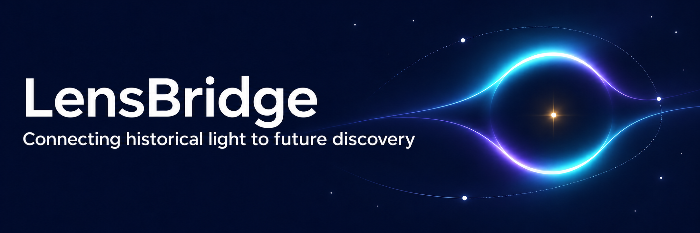
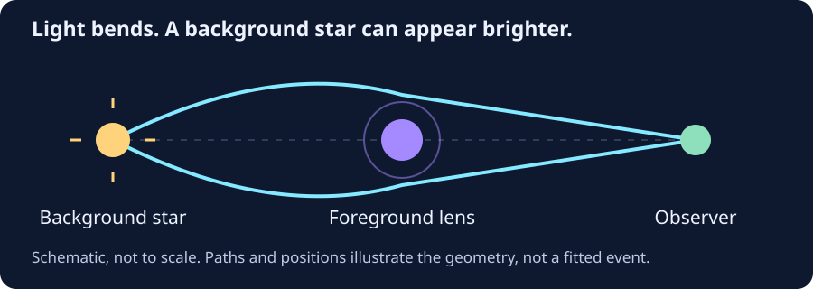
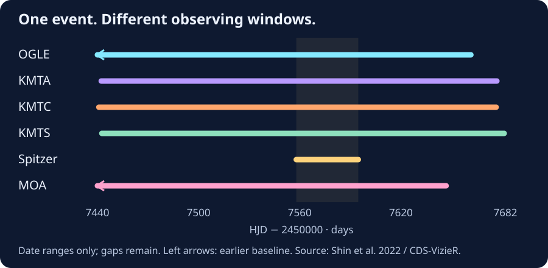

OGLE
1,368Published measurements

Independent community research infrastructure / Working dossier
We demonstrated that historical microlensing measurements can be collected across archives, their original files preserved, and their normalized records checked against those files. This is a demonstration of data provenance—not a new discovery or a new model of the lens.
Why RomanMAST in the address? LensBridge is the public name of this project; RomanMAST is its original repository name. Roman refers to NASA’s Nancy Grace Roman Space Telescope. MAST is the Mikulski Archive for Space Telescopes. These names describe the project’s intended future context, not an archive integration already delivered.
A foreground object’s gravity can bend light from a background star. As their alignment changes, the background star can appear brighter. Astronomers measure that change over time—a light curve—and use suitable models and additional observations to investigate the lens.

Explore 10,728 published measurements of OGLE-2016-BLG-1093 from OGLE, KMTNet, Spitzer and MOA. Different telescopes measure brightness on different scales, so the viewer keeps their measurements in separate panels instead of combining them into one brightness scale. KMTNet’s three observing sites have distinct colors.
Published measurements
294 KMTA · 657 KMTC · 549 KMTS
Published measurements
Published measurements
Load example · No setup needed
Start with the event window, turn on the published error bars, then choose Full range to see the longer observing history. These are archived observations, not simulated points or a new fitted model.

Download bounded OGLE, KMTNet and Spitzer examples. Retain native fields, source URLs, retrieval times and SHA-256 checksums.
Two surveys can assign different names to the same event: OGLE-2016-BLG-1190 is also KMT-2016-BLG-0113. Check explicit time offsets and trace normalized rows back to source bytes.
Develop historical light-curve, astrometric and parallax context. Gaia integration, calibration and joint physical fitting are future work.
OGLE-2016-BLG-1190 and KMT-2016-BLG-0113 identify the same physical event in two surveys. Matching those names lets us collect observations of one event from multiple observatories. This is a different event from 1093 above.
A retrieval for event 1190 produced 8,801 OGLE, 1,745 KMTNet and 14 published Spitzer measurements. Integrity validation reproduces all 10,560 normalized rows from the saved source files. The first-to-last observing date ranges overlap for 16.18 days: all three datasets cover the event during that shared interval, providing an opportunity for cross-checks. That does not mean continuous or simultaneous observations, or that the brightness scales have been calibrated together.
1190: 10,560 rows reproduced from saved source files. The separate 1093 example: 10,728 published measurements in the interactive viewer. These counts describe two different collections. Neither demonstration reports a new planet discovery or a new physical model.
This is the roadmap, not a completed three-part science resource. OGLE–Gaia candidate and astrometric context. Spitzer parallax history. OGLE–KMTNet light curves. Together, these proposed resources could strengthen future constraints on lenses such as stellar remnants and free-floating planets when suitable observations and models are available.
Project concept originated by Bart Salazar, developed with Brad Devowe through Simple Minds Studios. AI assists with source research, code and documentation; the recorded sources and checks make that work inspectable. Observations and scientific analyses are credited to the original research teams. LensBridge is an independent project in development, with calibration and physical modeling still ahead.